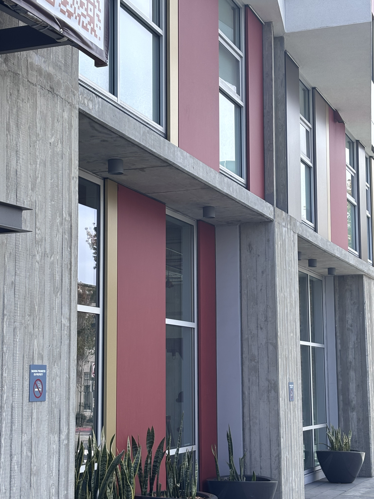
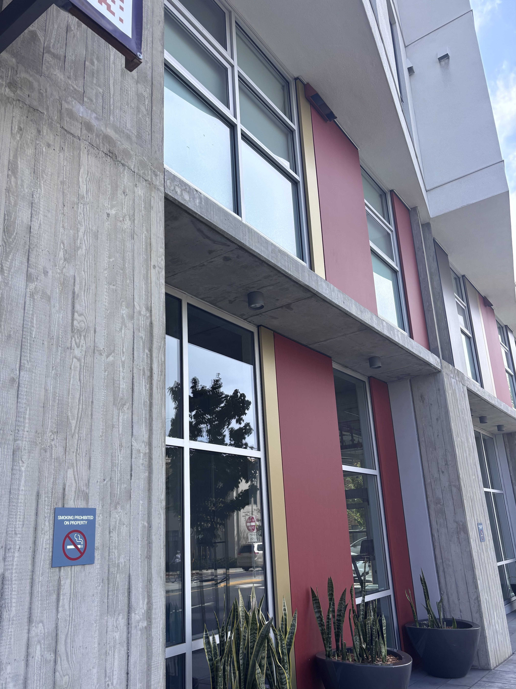

PROJECT 0
Becoming Friends with Your Camera
UC Berkeley CS 280A · Computer Vision and Computational Photography
Selfie: The Wrong Way vs. The Right Way
For the first photo the camera was close to my face and not zoomed in. The features that are closer to the camera like my nose look bigger, while the top of my head look pushed back and squished down. For the second photo the camera was farther away and zoomed in, so all my features are about the same distance from the camera and look even and natural.
Architectural Perspective Compression


For the first photo the camera was farther away and zoomed in, so the columns all look closer in size and the building looks flatter. For the second photo the camera was close to the building and not zoomed in, so the columns closest to the camera look much bigger than the ones farther down the building.
The Dolly Zoom

Meet bebybean :)